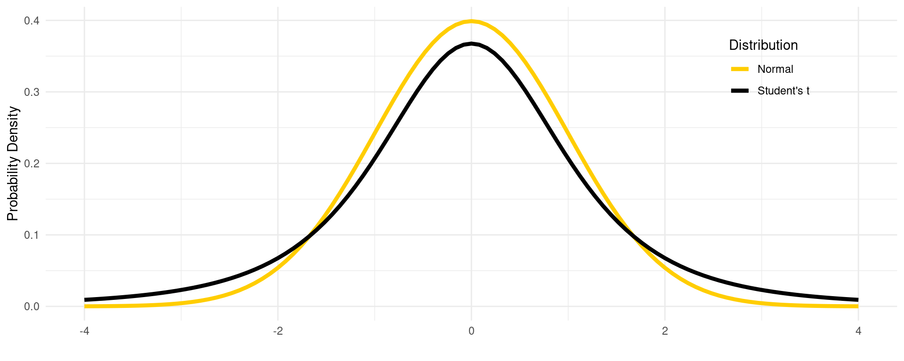
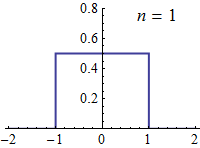
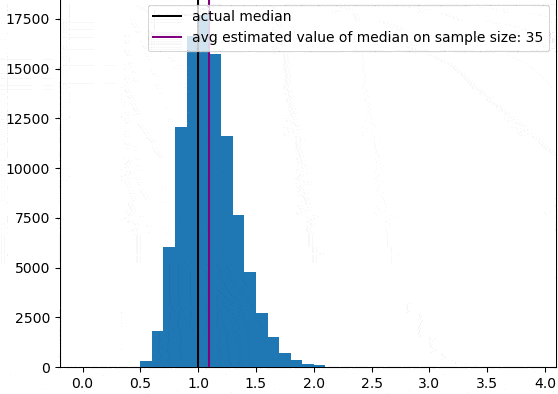
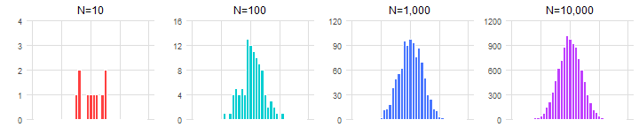
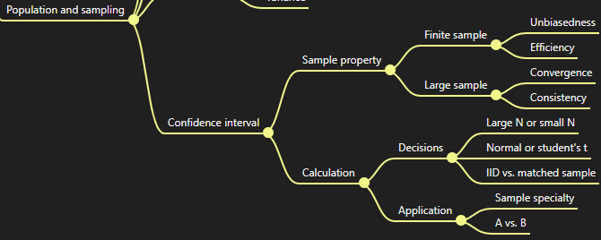
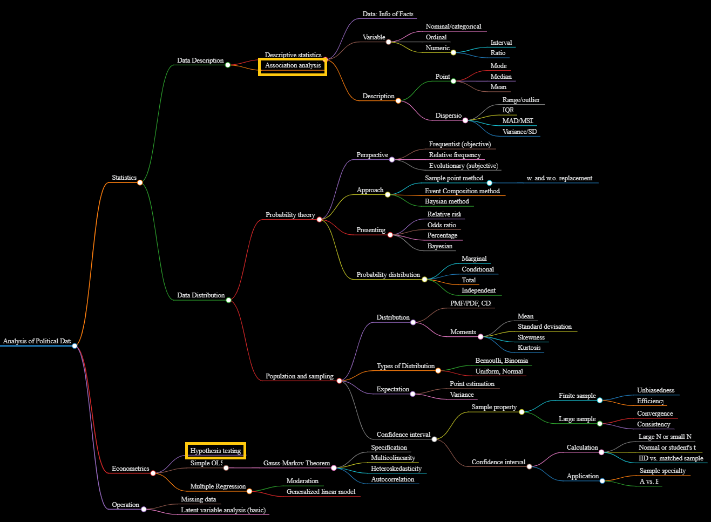

Confidence Intervals and Distribution Comparison
Large N & Leeuwenhoek (70700173)
Yue Hu
Tsinghua University
Overview
- Sample properties
- Confidence interval
- Applications of CI
Sample property
Random Variable (Formally Introduced)
A random variable (stochastic variable) is a type of variable in statistics whose possible values depend on the outcomes of a certain random phenomenon.
- A mapping or function from possible outcomes in a sample space to a measurable space, often the real numbers.
- Different from variable in algebra: \(Y = log((\sqrt{X})^{\frac{1}{e}}) - 15.\)
- Different from variable in data collection: “I asked about the respondents’ gender, age, and education.”
- Distribution for a random variable
- The mathematical function that gives the probabilities of occurrence of different possible outcomes for an experiment. (Given in last lecture)
- The description of how likely a random variable takes one of its possible states.
To learning about a random variable
Parameter ⇐ sample
Sample Properties
- Unbiasedness: Produce the right answer on coverage, E(p) = π
- Efficiency: Smaller variance of unbiased estimators
- How to increase efficiency? Hint: \(SE = \frac{\sigma}{\sqrt{n}}\)1
- Convergence: \(p\lim_{n \to \infty}X_n = a, a\in R.\)

- Consistency: \(p\lim_{n \to \infty}\hat{\theta}_n = \theta.\)

About Consistency
- Minimal requirement for estimators
- May perform badly in small samples
Only if a sequence of estimators is unbiased and converges to a value, then it is consistent, as it must converge to the correct value.
Confidence Interval
Learning the population from the sample
Let X be a random sample from a probability distribution with parameter θ. A confidence interval for the parameter θ, with confidence level γ is an interval determined by random variables u(X) and v(X) with the property:
\[Pr\{u(X)<\theta <v(X)\}\ =\ \gamma (= 1 - \alpha), \quad {\text{ for every }}\theta.\]
- In a repeatedly sampling, the percentage of the samples that could contain θ
Toss the Ring (Two-tailed)1
- Mean: \(\mu = \bar X \pm Z_{\alpha/2}SE\)
- \(SE(\bar{X}) = \frac{s}{\sqrt{n}}\), how far \(\bar X\) can disperse from μ.
- α: 1 - Confident level;
- Z-score: \(Z = \frac{X - \mu}{\sigma}\)
- Proportion: \(\pi = P \pm Z_{\alpha/2}\sqrt{\frac{P(1 - P)}{n}}\)
In 100 times sampling of …, there are … samples (… of the chance) that the CI could contain the true value.
How to get smaller CI?
When N Is Not That Large

Solution: A fatter-tailed distribution
CI Based on N
- For mean
- σ known, \(\mu = \bar X \pm Z_{\alpha/2}\frac{\sigma}{\sqrt n}\)
- σ unknown
- N ≥ 100ish, then \(\bar X \pm Z_{\alpha/2}\frac{s}{\sqrt n}\);
- N < 100ish, then \(\bar X \pm t_{\alpha/2}\frac{s}{\sqrt n}.\)
- For proportion
- π known, \(\Pi = P \pm Z_{\alpha/2}\sqrt{\frac{\pi(1 - \pi)}{n}}\);
- π unknown, \(\Pi = P \pm t_{\alpha/2}\sqrt{\frac{\pi(1 - \pi)}{n}}\).
Degree of Freedom: Student’s T critical points are relative to the d.f.
- For CI: n - 1
- For regression: n - k - 1
CI Application
Comparing Random Variables
- Is the sample special?
- Is sample A different from sample B?
A heuristic approach: comparing the most common status
Why is this possible?
Identify Special Case: An Example
Your friend is the accountant of “Dr.Hu’s Amazing Team” (dozens of peaches and plums). The organizer plans to buy the team a lunch meal to appreciate their hard working in the semester. Your friend suggested him to make a budget of ￥31 per person, since she has interviewed nine lecturers for their expenses on the past lunch: the average was ￥29.5 with a deviation of ￥3. The organizer accused your friend of wasting the money. Was your friend PUAed?
Identify Special Case: An Example
Your friend is the accountant of “Dr.Hu’s Amazing Team” (dozens of peaches and plums). The organizer plans to buy the team a lunch meal to appreciate their hard working in the semester. Your friend suggested him to make a budget of ￥31 per person, since she has interviewed nine lecturers for their expenses on the past lunch: the average was ￥29.5 with a deviation of ￥3. The organizer accused your friend of wasting the money. Was your friend PUAed?
Solution:
Def. PUA = Being blamed someone for something they did not do wrong.
⇒ The boss blamed your friend for a reasonable guess. ⇒ The guess is in the CI.
- Set α = 0.05;
- N = 9, small sample → t distribution, d.f. = 9 - 1 = 8;
- t(α < (1 - 0.05)/2) = 2.306 (
qt(.975, df = 8)in r). - \(CI = 29.5 \pm t_{\frac{0.975}{2}}(\frac{3}{\sqrt{9}})\), i.e, [27.5, 31.8].
Inference: If we make repeated sampling from the lunch expenses, there are 95% of the samples in which the interval between 27.5 and 31.8 contains the true mean. Therefore, an estimation of 31 sounds fine. Your friend was treated unjustly.
Sample comparison
Assuming X1 and X2 are independent and identical distributed (IID)
- σ is known, \(\mu_1 - \mu_2 = (\bar X_1 - \bar X_2) \pm Z_{\alpha/2}\sqrt{\frac{\sigma_1^2}{n_1} + \frac{\sigma_2^2}{n_2}}\).
- σ is unknown, \(\mu_1 - \mu_2 = (\bar X_1 - \bar X_2) \pm t_{\alpha/2}\sqrt{\frac{S_1^2}{n_1} + \frac{S_2^2}{n_2}}\)
- \((\bar X_1 - \bar X_2) \pm t_{\alpha/2}S_p\sqrt{\frac{1}{n_1} + \frac{1}{n_2}}\) when the population of the samples are identical, i.e., \(\sigma_1 = \sigma_2\), where \(S_p^2 = \frac{\sum(X_1 - \bar X_1)^2 + \sum(X_2 - \bar X_2)^2}{(n_1 - 1) + (n_2 - 1)}\), d.f.: \((n_1 - 1) + (n_2 - 1)\).
A.k.a., Difference in Means
An example
There are two modules in “Learning R with Dr. Hu and His Friends” workshop series: R basic and R ecology. R basic includes five workshops and got 100, 89, 66, 64, and 71 students registered per workshop in a semester. R ecology includes four workshops and got 56, 91, 57, and 80 students registered respectively in the semster. Were the two modules equally popular?
An example
There are two modules in “Learning R with Dr. Hu and His Friends” workshop series: R basic and R ecology. R basic includes five workshops and got 100, 89, 66, 64, and 71 students registered per workshop in a semester. R ecology includes four workshops and got 56, 91, 57, and 80 students registered respectively in the semster. Were the two modules equally popular?
Solution:
Set α = 0.05; small N → t.
\[\begin{align} \bar X_1 =& (100 + 89 + 66 + 64 + 71)/5 = 78; \bar X_2 = 71 \\ S_p^2 =& \frac{994 + 902}{(5 - 1) + (4 - 1)} = 207.8571;\\ \mu_1 - \mu_2 =& (78 - 71) \pm 2.3646 (\sqrt{116.5}\sqrt{1/5 + 1/4}) = 7 \pm 26.1059. \end{align}\]
Inference: If we make repeated sampling from the audience size of these lectures, there are 95% of the samples in which the interval between -18 and 33 contains the true mean. The CI covers 0.
In other words, there’s no statistical difference between the means.
IID vs. NON-IID
IID
Observations are selected without regard to who is in the other condition, a.k.a., independent and identical distributed (IID).
Matched
Observations are matched to someone in the other condition.
Difference in Difference in Means
Independent sample
\[\mu_1 - \mu_2 = (\bar X_1 - \bar X_2) \pm t_{\alpha/2}\sqrt{\frac{S_1^2}{n_1} + \frac{S_2^2}{n_2}}\]
Matched samples
\(D = X_1 - X_2\), then \(\Delta = \bar D \pm t_{\alpha/2}\frac{S_D}{\sqrt{n}}\), where \(S_D = \frac{\sum(D - \bar D)^2}{n - 1}\).
Matched proportions (Aggregate data)
\(D = \Pi_1 - \Pi_2\) ,then \(\Delta = D \pm Z_{\alpha/2}\sqrt{\frac{P_1(1 - P_1)}{n_1} + \frac{P_2(1 - P_2)}{n_2}}\)
How are the two methods different?
An example
Four students took an English exam and went through a review section. Then, they took the examin again. The scores are shown as following. Did they get better after the review? (α = 0.05)
| Student | Ray | Ulysses | Elizabeth | Naomi |
|---|---|---|---|---|
| IELTS | 57 | 57 | 73 | 65 |
| IELTS | 64 | 66 | 89 | 71 |
An example
Four students took an English exam and went through a review section. Then, they took the examin again. The scores are shown as following. Did they get better after the review?
| Student | Ray | Ulysses | Elizabeth | Naomi |
|---|---|---|---|---|
| IELTS | 57 | 57 | 73 | 65 |
| IELTS | 64 | 66 | 89 | 71 |
Solution: Let α = 0.05, \[\begin{align} D =& X_1 - X_2 \Rightarrow \bar D = \sum D / n = (7 + 9 + 16 + 12) / 4 = 11\\ S_D^2 =& 46 / 3 = 15.3 \Rightarrow S_D = 3.9 \therefore \Delta = 11 \pm 3.18\times \frac{39}{4} = 11 \pm 6 \end{align}\]
Inference: If we make repeated sampling from these students, there are 95% of the samples in which the interval between 5 and 17 contains the true mean of the difference. The CI is above 0, that is, students did get better.
Another Example
Gallop drew a pair of 1500 samples from the American population. In the sample of 1980, there are 52% Democrats, and 46% in the 1985 sample. Were the Democrats the same for two years, given the 95% CI?
Solution: Let α = 0.05,
\[\begin{align} \Pi_1 - \Pi_2 &= (0.46 - 0.52) \pm 1.96\sqrt{\frac{0.46 * 0.54}{1500} + \frac{0.52 * 0.48}{1500}} \\ &\approx -0.06 \pm 0.036. \end{align}\]
Inference: If we make repeated sampling from the Amercian population, there are 95% of the samples in which the interval between -0.042 and 0.03 contains the true mean. The CI contains 0. Thus, the proportion of Democrats in 1980 was not different from that in 1985 statistically at the 0.05 level.
BFF
Bayesian
- Credible interval
- \(\theta_{prior-based\ r.v.} \in [a, b]_{fixed}\)


There are …% of the chance that the true value lies in the CI.
Frequentist
- Confidence interval
- \(\theta_{fixed} \in [a, b]_{r.v.}\)
There is 95% chance the CI could contain the true value (before any data is collected).
Fiducial
- (Fiducial) Conf interval
- \(\theta_{r.v.} \in [a, b]_{fixed}\)
There is 95% chance the CI could contain the true value
(before any data is collected).
Take-home point

